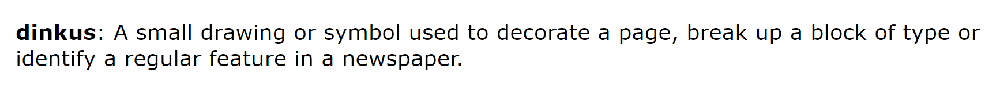
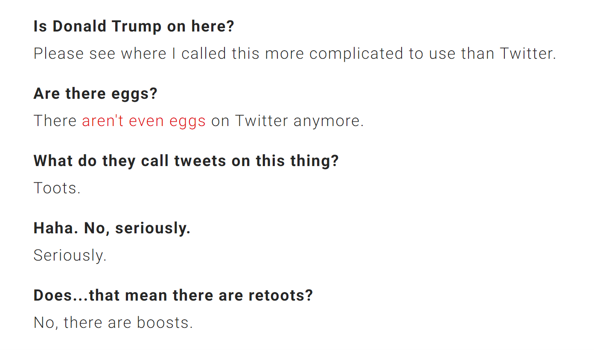

There are a few entities which continue to validate what I'm pursuing, but Joshua Topolsky and his Outline are particularly worth noting. In search of reassurance, I listened to a podcast he appeared on in February, last night, and also found one from 2013, when he was still EiC of The Verge. Basically the entirety of the first is within the idealism I've risked most of myself for, in case you're curious. I've looked up to Topolsky in a huge way, this past year.
He has done - and is doing - many things which I am intrinsically drawn to earn for my legacy, and the presence of his wife on his staff (their few podcasts together are adorable in a very particular way,) is idyllic in appearance, at least. I love the way they talk about each other. I suppose spousal editorial staff is probably the personal hell of a good many people. Perhaps, it's even my own.
Listening to him talk on Digiday, though, reminded me - along with a few other works I've consumed lately - that technically, Extratone is a business. Or at least... That it must become one eventually or die forever. While trying to explain my future plans to a friend, I inadvertently layed out some 'steps for growth.'
- Form and activate the community.
- Build a beautiful, one-of-a-kind method of content delivery.
- Attain a fairly dependable content cadence.
- Sell the product in a way that immediately and - from then on - consistently ensures and/or furthers its quality.
I guess we're somewhere between 2 and 3 right now. I'm still building a body of written work more or less on my own, which is okay, considering that nobody is paid. I suppose it'd be most desirable - before I move to the Northwest - to figure out how to make The Tone as much of a learning experience for my closest staff as possible. And regardless of all other external goals of the magazine, I think it is more than safe to say that I've learned more in the past 10 months from a fucking WordPress website than I would've if I'd spent that time at the Journalism school.
The first annual renewal payment for extratone dot com just went through, actually. A year ago, I was much more entertaining, but virtually directionless. I honestly can't tell if I feel any better internally, day-to-day, but I know I am at least attaining the capability of real friendship for the first time in my life, and I suppose that's more than worth losing virtually all of my engagement on Twitter. Perhaps its even worth losing a portion of the freshness in my perspective - the stuff I thought made it worth it in the first place. Especially if my staff maintains it healthily within their own.
I'll admit that - in retrospect, after spending a year reading, writing, and digitally fussing - a lot of my original content smells like edgy nonsense. Some of the work within our network does too, honestly, but it's usually much less so.

Of course, that transition required an excruciating crucible, for me, but that's exactly why I'm incessantly compelled to make as much use of my trauma as possible: so that my friends and staff may be able make progress toward more fulfilling lives without such a massive up-front cost.
As I was writing my interview with mastodon's creator, I kept an eye out for related coverage, and eventually saw what PCMag did, and it's unwanted rant-spuringly aggravating language. I've never been good at written interviews.
Anecdote: For my first assignment of my first news class in community college, my instructor - Heather - assigned me to write up a piece on a local sweets shop specifically because I begged for any beat but food. Looking back, I think it was wise, on her part, but the product could very well be the most tedious and stale collection of words I've ever been responsible for, on the worst website I've ever seen. So now... I'm going to share it with you.

I want to die.
Anyway.
We'll never know if I'd show signs of improvement, writing about food again. The craft in my interview with Eugen is not very flattering, but I'm working on making use of the vanity to improve it.

For most of my adult life, I've been trying to figure out why publications like PCMag feel it necessary to belittle their audience and their subjects to such a degree. Silicon Alley can't possibly be that vapid as to nix all soul in any story, ever.
I mean... What in the hell is this, even??????
I haven't been a reader since I used to loiter in Barnes & Noble with a pile of print editions in the oughts, but this sort of layout has got to be some kind of digital sin. I'm not going to bother digging through the publication to compare this work with others for the moment. Perhaps one day, I'll feel the need to polish this rant into an argument and make it more visible. Surely, though, the proximity of this abomination to the word Mag or even Magazine must keep somebody awake at night.
That's not to say it doesn't take some sort of discipline. I doubt I could write in this way without hulking hyper-deliberately over wherever the fuck this dialect comes from. I think it's almost certainly more efficient as an informative device than my piece, or Sarah Jeong's, but the assumption that readers would be so disinterested as to hesitate to even commit to complete sentences regarding something actually newsworthy for a technology publication should be taken personally.
(This is going to echo what Topolsky said in both of those podcasts in big ways, but I'll try to keep it relatively brief.)
I believe there is an audience that is craving attention to detail in their stories, a more intimate, longer-lasting, and more invested relationship with a much smaller number of publications. Even a sense of involvement in the process. It's probably a direct result of my longtime consumption of car magazines - most of which still have sizable sections dedicated to direct, public correspondence with readers. It's also cross-platform to a surreal degree. Auto journalists of all tiers will straight up engage with you on Twitter. (MotorTrend literally prints YouTube comments.)
Sure, the readership is old, and the topic is an outlier (it's fairly common knowledge that 'car people' are waaaay more vulnerable to obsession than other special interest communities,) but the species is more or less the same, and the results are plain as day, any time you care to look. In recently returning my attention to technology journalism, I've noticed an irritating affront to meta conversation with strangers. My theory is that they've been paid for their words so long that they develop a very particular greed towards them, which is why academic journalism institutes are immediately shunned by their alumni after graduation until they are definitely Too Tired to sling copy and begin to climb sortof diagonally through editorial titles until they are stashed away in some hole. Then, after ruminating until their first encounter with Actual Death - if they're still interested in the whole thing - they crawl out to be propped up in front of moderately sized bodies of petrified students to scream in 100% bitterness about The Ethics that plagued them spiritually and financially their entire career at the acolytes as their last joke on the world.
But they won't engage with strangers on Twitter.
As someone who - for better or worse - chose to sidestep the academic route, I will never advocate for any value in withholding information - especially funny stories - about Extratone's operation. If anything, rediscovering relevance is a wholly meta pillar of our editorial bent. (Hence, why Tim calls us The Nieman Lab of Community College.)
I also believe the subscriber & advertising revenue models are directly - if not primarily - involved in the constriction of conversations regarding a publication's operation. It's my goal to cultivate a group of subscribers that are directly invested in the product (there's another new word on my part) financially, intellectually, and emotionally. It's not exactly unheard of, ya know.
Anywho, I'm going to leave you in peace for now. I've really enjoyed this wanton spewing of conjecture, but then... who doesn't love to go on, unchecked?
Is this what blogging is? It's fucking obnoxious.